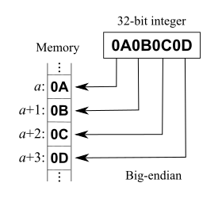
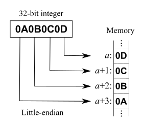

Binary Encoding
To store data on disk efficiently, it needs to be encoded using a format that is compact and easy to serialize and deserialize.
Primitive Types
Keys and values have a type, such as integer, date, or string, and can be represented in their raw binary forms.
Most numeric data types are represented as fixed-size values. When working with multibyte numeric values, it is important to use the same byte-order (endianness) for both encoding and decoding.
Endianness
Endianness determines the sequential order of bytes.
Given a value 0x0001, How do we actually align its two bytes in memory?

European languages conventionally use left-to-right writing system. That can be compared to big-endian, where the most significant digit goes to the left and least significant digits continue to the right: 1234
Hebrew, Farsi, and Arabic, write words right-to-left. And so is little-endian, where the most significant digit is on the right. 4321
Example:
 
Strings and Variable-Size
Strings and other variable-size data types (such as arrays of fixed-size data) can be serialized as a number, representing the length of the array or string, followed by size bytes.
Bit-Packed Data: Booleans, Enums, and Flags
Booleans can be represented either by using a single byte, or encoding true and false as 1 and 0 values. Since a boolean has only two values.
Enum
Enumerated types are used to represent often repeated low-cardinality values. For example, We can encode a tree node type using an enum:
#![allow(unused)] fn main() { enum NodeType { Root, // 0 Branch, // 1 Leaf // 2 }; }
Flag
Another closely related concept is flags, kind of a combination of packed booleans and enums.
Flag values can be read and written from the packed value using bitmasks and bitwise operators. Lets see this true table
Here gray recrangles represent 0 and greens are 1.
#![allow(unused)] fn main() { let a = 0b_0011; // Bits : 0 0 1 1 let b = 0b_0101; // We need : ^ ^ println!("Out: {:04b}", a & b); }
We can represent bits (a = 0011) with prefix 0b. Here we are using & bitmask,